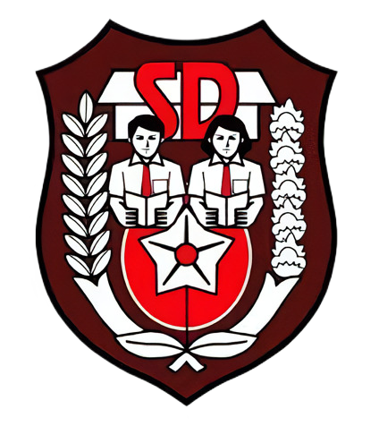
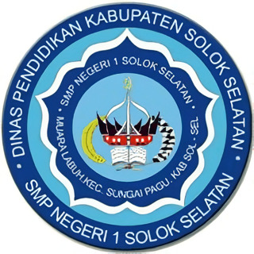
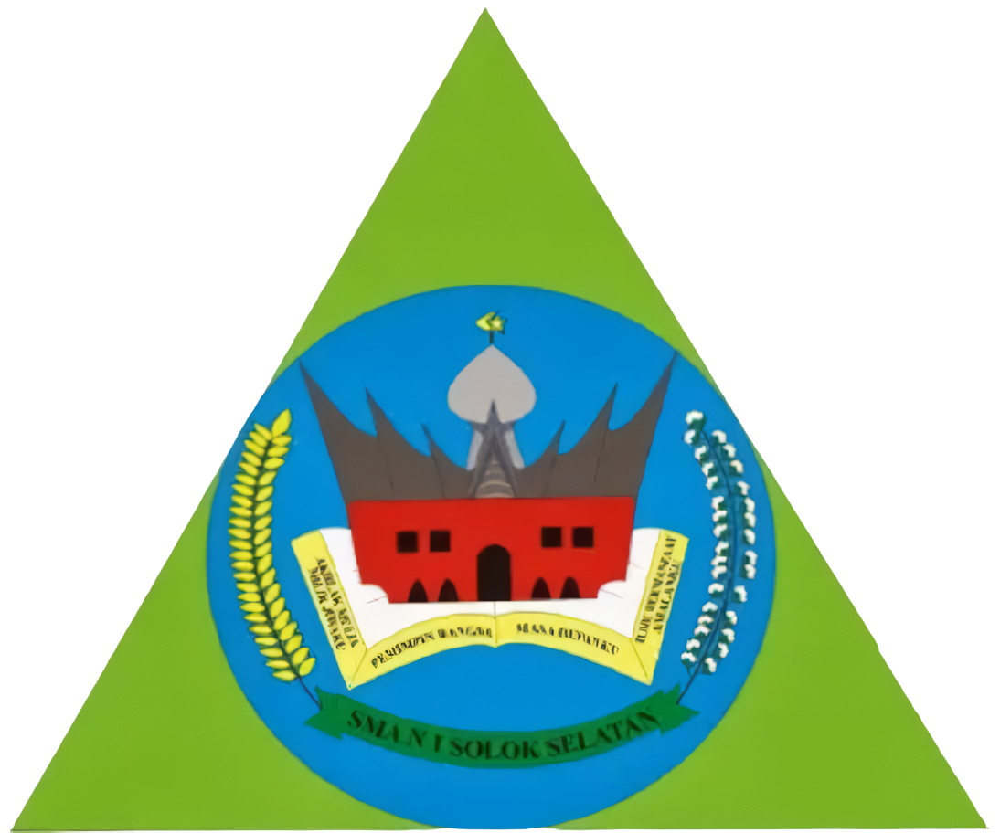

Riwayat Pendidikan
|  |  |  |  |

|
|||
| No. | Pendidikan | Tahun | Prodi |
|---|---|---|---|
| 1 | SD Negeri 05 Pasar Muara Labuh | 2008-2014 | - |
| 2 | Sekolah Menengah Pertama Negeri 1 Solok Selatan | 2014-2017 | - |
| 3 | Sekolah Menengah Atas Negeri 1 Solok Selatan | 2017-2020 | Jurusan Matematika dan Ilmu Alam |
| 4 | Universitas Negeri Padang | 2020-2022 | Pendidikan Bahasa Inggris |
| 5 | Politeknik Negeri Padang | 2022 - Sekarang | Teknologi Rekayasa Perangkat Lunak |